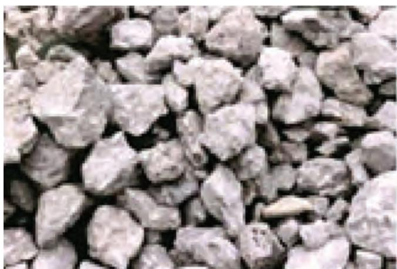
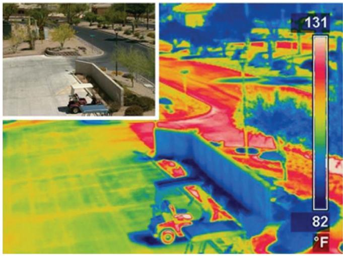
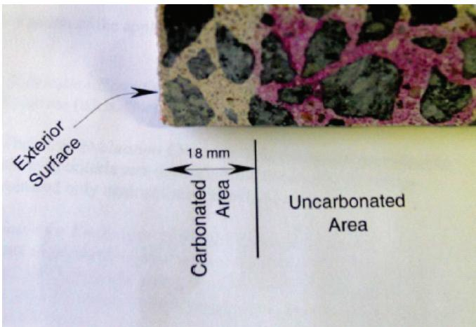
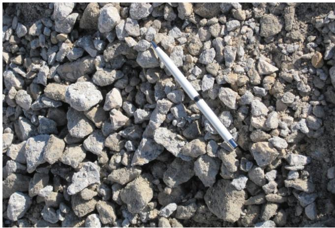
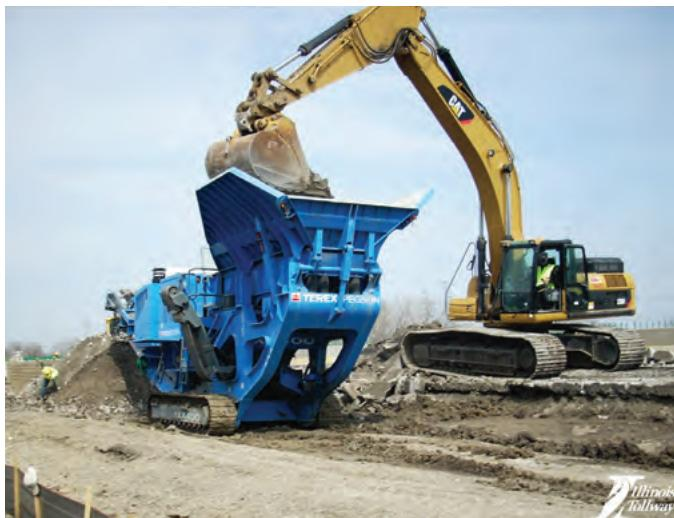

Concrete Pavement Recycling and Sustainability
Concrete Pavement Recycling and Sustainability guides engineers, material suppliers, and contractors to select low‑energy, low‑emission construction practices and to ensure that at the end of a pavement’s service life the concrete is fully reclaimed for reuse as recycled concrete aggregate, creating a zero‑waste stream【3】. It addresses the full lifecycle—from raw‑material extraction through design, construction, maintenance, and end‑of‑life—by promoting local material use, water and concrete recycling, in‑place processing, and pervious‑concrete options that lower fuel consumption, emissions, and landfill disposal while meeting durability requirements【1】【2】. Decision criteria prioritize sustainability (zero waste, carbon sequestration, reduced embodied energy), followed by performance, cost, and safety, with outcomes measured through life‑cycle assessment tools such as the Greenroads™ rating system and systematic LCA to verify material savings, emissions reductions, and extended service life【2】【3】.
Sources (4)
Purpose and decision context
Concrete Pavement Recycling and Sustainability is meant to guide decision makers—engineers, material suppliers and contractors—in choosing whether and how to adopt sustainable concrete‑pavement solutions. It directs the choice of construction practices that emphasize low‑energy plant operations, recycling water and returned concrete, low‑emission equipment, in‑place recycling, and local material utilization to improve long‑term performance while reducing environmental impact. The concept also frames the decision at the end of a pavement’s service life: “At the end of life, a concrete pavement should be completely recycled.” The preferred alternative is to process the pavement into recycled concrete aggregate for reuse, because “The ultimate goal of recycling is to develop a zero waste stream utilizing all byproduct materials in the rehabilitation or reconstruction of a concrete pavement.” Thus, the decision supported by this concept is the selection of sustainable material and process options across the pavement lifecycle—from initial mix design through construction to end‑of‑life recycling—rather than disposal. [3]
The following figure illustrates specific features of concrete pavements that can enhance sustainability.
 Diagram illustrating the sustainability features of concrete pavements. [3]
Diagram illustrating the sustainability features of concrete pavements. [3]
The figure displays a cross-section of a pavement structure annotated with various environmental and performance benefits, including “Industrial By-Product Use” and “Renewal and Recycling.”
[3] — Ch. 1 (pp. 14–22), Ch. 11 (p. 110)
The concept addresses several interrelated problems. First, it confronts the broad environmental impact of concrete roads: “Concrete pavement recycling and sustainability tackles the need to cut the environmental footprint of concrete roads across every stage—from raw material extraction, through construction and use, to maintenance and end‑of‑life disposal—by encouraging design, material choices and recycling practices that lower resource consumption, fuel use and emissions while discouraging landfilling.” Second, it responds to the reliance on new aggregates: “Concrete pavement recycling and sustainability tackles the fundamental problem of over‑reliance on virgin aggregates and the resulting material waste, emissions, and cost burdens associated with extraction, processing, and transport.” Third, the sector faces economic and performance pressures: “The concrete pavement sector is confronted with the dual challenge of meeting tighter budget constraints and higher performance expectations while reducing its environmental footprint.” Finally, conventional impervious surfaces create water‑management issues: “Conventional impervious pavements cause storm‑water to collect and run off, creating runoff management challenges that threaten water quality and drainage capacity.” The overarching performance goal is to develop pavement systems that lower lifecycle fuel consumption and emissions, reclaim discarded material for new construction, meet durability and traffic requirements, and provide sustainable functions such as storm‑water infiltration where appropriate. [1][2][3][4]
The following figure illustrates the pavement life-cycle phases that are central to these sustainability efforts.
 Pavement life-cycle phases and associated environmental impacts. [1]
Pavement life-cycle phases and associated environmental impacts. [1]
The figure illustrates the sequential stages of a pavement’s existence, starting from materials extraction through construction, use, maintenance, and finally end-of-life disposition. Curved arrows originating from each phase point to specific environmental factors such as “Extraction and production,” “Onsite equipment,” “Carbonation,” and “Landfilling.” The diagram visually represents the complex system where multiple attributes must be considered when assessing sustainability to assist in decision-making.
[1] — Ch. 2 (p. 26); [2] — Sustainability (pp. 46–73); [3] — Ch. 1 (pp. 14–22), Ch. 6 (pp. 88–102), Ch. 11 (pp. 110–113); [4] — Pervious Concrete (p. 28)
Scope and applicability
Concrete‑pavement recycling and sustainability is appropriate for a wide range of project types, asset conditions, and phases of development. The guides agree that the approach “apply across all project types and asset conditions—from the design of brand‑new concrete slabs to the rehabilitation, reconstruction, or routine maintenance of existing pavements, and finally to their end‑of‑life disposition.” It is relevant “Whenever a pavement is being designed, built, operated, preserved, or retired … making sustainability relevant at each stage.” Specific project types highlighted include: - “projects that can incorporate reclaimed concrete material on‑site, such as rehabilitation or reconstruction work where existing pavement can be processed and reused,” - “new constructions that call for recycled concrete aggregate in exposed‑to‑air applications like embankment fill, gravel roads, or railroad ballast,” - “most appropriate for trail or path projects where a pervious concrete surface can provide an environmentally friendly solution,” - “End‑of‑life reconstruction or major rehabilitation of concrete roads, streets, and parking areas,” - “new construction that incorporates RCA as a sustainable aggregate substitute in structural concrete or supporting layers,” and - “in‑situ recycling operations where the pavement is broken down on site to reduce haul distances.”
Asset conditions suitable for these strategies are those “that allow the material to be salvaged rather than discarded” and “where the concrete surface has reached its service life, shows significant distress, or requires removal for design upgrades.” For pervious‑concrete trails, the condition includes a subgrade that may require evaluation of permeability during the design stage.
The development stages most conducive to recycling are identified as the construction or reconstruction phases when decisions about processing and transport are made, “the demolition or early reconstruction phase, when reclaimed material can be immediately integrated into the new pavement system,” and the design stage for pervious‑concrete applications where subgrade permeability must be assessed. Ongoing sustainability also depends on maintenance actions such as annual cleaning of debris to preserve infiltration performance. [1][2][3][4]
[1] — Ch. 2 (p. 26); [2] — Sustainability (p. 73); [3] — Ch. 1 (pp. 14–16), Ch. 6 (p. 61), Ch. 11 (p. 110); [4] — Pervious Concrete (p. 28)
Information needs
The assessment begins with a detailed inventory of existing pavement condition and site characteristics—subgrade type, climate, drainage capacity, permeability, and the current structural layers—to define the structural and functional requirements for the given location. Projected traffic volumes, both present and future, are required to model vehicle‑pavement interaction and associated fuel‑related emissions. Quantifying the amount and condition of reclaimed concrete material (including mortar content and particle size distribution) is essential for predicting mechanical performance of recycled concrete aggregate. Cost data must cover processing, purchasing, and transportation of virgin aggregates as well as any savings realized from in‑place recycling. Traffic‑related inputs such as haul‑truck volumes and fuel consumption are needed to evaluate reductions in truck traffic, road wear, and emissions. Environmental information should capture subsurface moisture and temperature regimes that influence carbonation rates, the depth of carbonation over time, and the potential CO₂ sequestration associated with both new and recycled concrete. Stakeholder input is required to align the project with zero‑waste goals, local waste‑reduction policies, and landfill avoidance objectives. [1][2][3][4]
The following figure illustrates the recycled concrete aggregates that are central to this sustainability assessment.

Recycled concrete aggregates [2]The image displays a close-up view of a pile of irregular, angular grey stones with rough textures.
[1] — Ch. 2 (p. 26); [2] — Sustainability (p. 73); [3] — Ch. 6 (p. 61), Ch. 11 (p. 110); [4] — Pervious Concrete (p. 28)
Information on concrete pavement recycling and sustainability must be as accurate, up‑to‑date, and comprehensive as possible because the manual treats the topic as a living document that is regularly revised to incorporate new knowledge, and it stresses that systematic, accurate assessment of pavement sustainability is essential for recognizing improvements and guiding innovation. [3]
[3] — Ch. 1 (pp. 14–16)
Alternatives
The feasible options that should be compared include reusing existing base materials versus importing virgin aggregates, and several concrete‑material pathways that differ in recycled content and processing location. The guides note that “Existing materials are reused, reducing the exploitation of virgin material.” and that “Damage is reduced to surrounding roads from hauling existing base materials out and bringing virgin materials in.” They also highlight that “Costs related to the processing, purchasing, and transportation of virgin aggregates are minimized.” and that “Truck traffic is reduced, resulting in fuel savings and lower emissions.”
Within the reuse category, the options span using reclaimed concrete as aggregate in new mixes, substituting other recycled road products, and employing emerging in‑situ recycling techniques. One guide identifies “using reclaimed concrete as aggregate in new mixes,” while another points out that “The focus is on recycling concrete, but recycling hot-mix asphalt and unbound granular materials into a new concrete pavement is also discussed.” Emerging approaches are described as “Emerging in situ recycling techniques are discussed as a sustainable alternative.”
The range of applications for recycled concrete aggregate (RCA) further expands the comparison set: “Hydraulic cement concrete can easily be processed into RCA which has added value as an aggregate replacement in new concrete, as a dense graded base material, as drainable base material, and as fine aggregate.” Thus the options to compare include substituting RCA for virgin aggregate in new concrete mixes, using it as a dense‑graded base layer, employing it as a drainable base, or incorporating it as fine aggregate.
Operational factors that should be evaluated alongside these material pathways are low‑energy plant operation (“low energy plant operations”), water reuse (“recycling water and returned concrete”), low‑emission equipment (“low-emission equipment”), and local sourcing (“Locally provided material”). [2][3]
[2] — Sustainability (p. 64); [3] — Ch. 1 (pp. 14–22), Ch. 6 (p. 102), Ch. 11 (pp. 110–113)
Decision criteria
The guides concur that sustainability should be the primary driver of concrete‑pavement recycling decisions, with performance closely following and cost considered next; safety is also required where hazardous activators could arise. Sustainability is framed as a zero‑waste, low‑carbon‑footprint goal that sequesters CO₂ and avoids landfill use. Reusing existing material “reduces the exploitation of virgin material” and “minimizes landfill material,” while “local recycling minimizes environmental impact by reducing the carbon footprint, embodied energy, and emissions.” Cost advantages are highlighted through “costs related to the processing, purchasing, and transportation of virgin aggregates are minimized” and “significant user cost savings including fuel consumption and lost work time due to delays.” Performance requirements are met because recycled mixes can deliver “significantly lower carbon and energy burdens than portland cement while providing equivalent or superior performance,” and pervious concrete provides “flexural strength between 150 and 550 psi,” though “special maintenance activities are required” for long‑term performance. Accordingly, the controlling criteria are sustainability, performance, cost, and safety; other factors such as schedule, accessibility, or broader public impact are not presented as primary decision drivers. [2][3][4]
[2] — Sustainability (pp. 46–73); [3] — Ch. 1 (p. 40), Ch. 6 (pp. 88–89), Ch. 11 (p. 110); [4] — Pervious Concrete (p. 28)
When evaluating concrete pavement options, prioritize the measurable sustainability gains—such as reduced artificial‑lighting energy, lower emissions, and improved night visibility—that come from light‑colored or photocatalytic surfaces, but treat material cost as a limiting constraint; projects should first satisfy thresholds for energy savings (for example, avoiding the roughly 60 % higher energy use of dark pavements) and safety benefits, then assess whether the extra expense of a photocatalytic cement is justified by its net environmental advantage. [3]
The following figure illustrates how these material choices directly influence thermal performance by showing the effect of pavement type and albedo on surface temperature.

Thermal imaging of a concrete pavement surface compared to its visible-light counterpart. [3]The figure displays a side-by-side comparison of a paved area in standard photography and thermal infrared imaging, revealing significant temperature variations across the surface. This visualization demonstrates how light-colored concrete surfaces reflect solar energy rather than absorbing it, which is a key strategy for mitigating urban heat islands and reducing global warming through radiative forcing.
[3] — Ch. 6 (pp. 88–89)
Analysis methods and tools
The manual recommends evaluating concrete‑pavement sustainability primarily through established rating and life‑cycle tools. Chapter 10 describes the use of the Greenroads™ rating system, which applies defined criteria and performance thresholds to rate pavement projects, and it also calls for a rigorous environmental life‑cycle assessment (LCA) to quantify and optimize impacts across the entire cradle‑to‑grave span. [3]
[3] — Ch. 1 (pp. 14–16)
The sustainability analysis rests on several explicit assumptions that introduce notable uncertainty. First, it assumes an average carbonation rate of 4.23 mm per year for uncoated concrete, applying this uniformly across all pavements and using a national estimate of roughly 274,000 t CO₂ sequestered in the first year; however, carbonation depth is sensitive to concrete strength, cement content, and ages, creating temporal decay uncertainty. Second, energy‑saving calculations for light‑colored surfaces assume that parking‑lot lighting operates five hours per day and that a darker surface consumes 60 % more electricity than a lighter one, yet the durability of high‑reflectance photocatalytic coatings and their cost‑benefit balance remain uncertain. Third, the life‑cycle model treats the pavement as a cradle‑to‑cradle system, assuming it can be completely recycled into a zero‑waste stream; this hinges on local recycling capacity and on how much original mortar stays attached to reclaimed aggregate, which affects RCA performance. Finally, the analysis presumes that accelerated carbonation in reclaimed material can recover up to 50 % of the CO₂ emitted during cement production, but site‑specific subsurface conditions may limit actual sequestration below this potential. [3]
The following figure illustrates how carbonation depth is visually assessed using a phenolphthalein test.

Depth of carbonation determined by the phenolphthalein test (pink two-thirds of the sample is not carbonated) [3]The figure displays a cross-section of concrete where the exterior surface has reacted with atmospheric carbon dioxide to form a beige-colored carbonated layer, while the interior remains pink due to the phenolphthalein indicator.
[3] — Ch. 6 (pp. 61–89), Ch. 11 (p. 110)
Stakeholders and constraints
The parties responsible for input, decision‑making, and approval of concrete pavement recycling and sustainability initiatives are the decision makers—typically the agency officials overseeing highway programs—along with the design engineers, the material suppliers who provide recycled or supplementary cementitious products, and the contractors who will implement the work. These stakeholders evaluate options, consider life‑cycle impacts and local material availability, and ultimately authorize the chosen sustainable pavement solution. [3]
[3] — Ch. 1 (pp. 14–16)
The choice of recycling method for concrete pavements is bounded by a set of design standards and policy directives. Design requirements limit the thickness of precast panels – “Material usage is optimized through minimizing the thickness of the precast panels.” – and demand precise delivery of component quantities, as “Construction waste is reduced because the exact amount of necessary components is delivered to the site—there is no additional ‘incidental’ thickness to the slab.” Materials must be sourced locally; “Mixtures for precast systems use locally derived materials…” and policy calls for using recycled supplementary cementitious materials such as fly ash or slag. Policy directives further require material reuse, a minimum share of recycled content, and selection of locally provided aggregates to “minimize haul distances,” while also limiting hazardous substances and encouraging bio‑engineering where appropriate.
When pervious concrete is selected, additional design criteria apply. The mix must achieve a “void content between 15% and 25%” and maintain a low water‑to‑cement ratio that yields a “flexural strength between 150 and 550 psi.” Designers are required to assess the subgrade; “underlying soil properties should be investigated to ensure proper drainage characteristics,” and if permeability is insufficient, the design must incorporate “an additional drainage component consisting of a drainable subbase stone along with a subdrain pipe and outlet is required.”
These standards, policies, and design specifications together constrain which recycling options can be employed, favoring locally sourced aggregates, recycled binders, and engineered drainage solutions. [2][3][4]
[2] — Sustainability (p. 46); [3] — Ch. 6 (p. 102); [4] — Pervious Concrete (p. 28)
Timing and implementation
Decisions about concrete‑pavement recycling and sustainability are recommended at two pivotal moments in the pavement life cycle. During the design stage—when “The design stage refers to the process of identifying the structural and functional requirements of a pavement for given site conditions (i.e., subgrade, climate, present and future traffic, existing pavement structure, etc.), as well as the determination of the pavement structural composition and accompanying materials”—the choice can shape sustainability across construction, maintenance, rehabilitation, and reconstruction, as “Design also plays an important role, influencing the sustainability of new construction as well as maintenance, rehabilitation, and ultimately reconstruction of the existing pavement.” A second decision point occurs at the end‑of‑life stage—when “At the end of life, a concrete pavement should be completely recycled”—allowing the material to be reclaimed for reuse, with “The ultimate goal of recycling is to develop a zero waste stream utilizing all byproduct materials in the rehabilitation or reconstruction of a concrete pavement.” [1][3]
The following figure illustrates this concrete pavement life cycle.
 The concrete pavement life cycle (Van Dam and Taylor 2009). [3]
The concrete pavement life cycle (Van Dam and Taylor 2009). [3]
The figure displays a cyclical diagram representing the stages of a concrete pavement’s existence, starting with Design and moving through Materials Processing, Construction, Operations, Preservation and Rehabilitation, and finally Reconstruction and Recycling.
[1] — Ch. 2 (p. 26); [3] — Ch. 11 (p. 110)
The primary event that triggers concrete‑pavement sustainability action is the moment a pavement reaches its end‑of‑life stage—whether by completing its design service life, being scheduled for replacement, or otherwise slated for removal. At that point ‘At the end of life, a concrete pavement should be completely recycled.’ This requirement launches a zero‑waste, cradle‑to‑cradle process aimed at reusing all by‑product materials in rehabilitation or reconstruction, as expressed in ‘The ultimate goal of recycling is to develop a zero waste stream utilizing all byproduct materials in the rehabilitation or reconstruction of a concrete pavement.’ Additionally, crushing the reclaimed material at this stage enables ‘significant additional amounts of C O _ { 2 }can be absorbed through carbonation at the end of a pavement’s life, particularly if it is crushed as part of a recycling operation.’ [3]
The following figure illustrates the recycled concrete aggregate produced through this end-of-life recycling process.

Recycled concrete aggregate (RCA) with a scale pen for size reference. [3]The image displays a pile of crushed, angular grey stones identified as recycled concrete aggregate (RCA). A white pen is placed on the surface to provide a visual scale for the size of the individual aggregate pieces. This material represents reclaimed concrete pavement that has been processed into RCA, which serves as an aggregate replacement in new concrete or base materials to create a zero-waste stream.
[3] — Ch. 6 (p. 61), Ch. 11 (p. 110)
Implementing pervious concrete as the sustainable pavement option requires using an open‑graded mix with a void content between fifteen percent and twenty‑five percent and a low water‑to‑cement ratio, plus a soil investigation to verify subgrade permeability; when the subgrade is poorly permeable, a drainable stone subbase together with a subdrain pipe and outlet must be installed. Ongoing maintenance calls for high‑pressure washing combined with vacuuming, scheduled at least once per year to keep the voids clear and maintain water infiltration. [4]
[4] — Pervious Concrete (p. 28)
Outcomes and follow-up
Success is achieved when concrete pavement projects use the thinnest feasible panels, deliver exactly the amount of material required so that construction waste is negligible, and extend service life with a quiet surface texture while generating measurable user cost savings through reduced fuel consumption and fewer work‑time delays. “Material usage is optimized through minimizing the thickness of the precast panels.” “Construction waste is reduced because the exact amount of necessary components is delivered to the site” and any spare components or panels are reclaimed: “Any spare components/panels can be recycled, and their materials used again in another product.” The concrete mix relies on locally sourced aggregates, low‑emission cements, supplementary cementitious materials and “low energy plant operations,” while construction practices incorporate “recycling water and returned concrete,” use of “low-emission equipment,” and “in-place recycling” to minimize waste, water use and emissions. Success also includes ancillary benefits such as lower urban heat island effects and carbon sequestration that can recover up to half of the CO₂ emitted during cement production: “recovering up to 50 percent of the CO2 released during cement manufacturing.” At end‑of‑life the pavement is completely recycled, creating a zero‑waste stream: “At the end of life, a concrete pavement should be completely recycled.” “The ultimate goal of recycling is to develop a zero waste stream utilizing all byproduct materials in the rehabilitation or reconstruction of a concrete pavement.” Performance is measured by tracking panel thickness, quantifying waste versus design quantities, recording fuel use and lost work time, accounting for the mass of recycled components recovered, and reporting the proportion of local and recycled SCMs in the mix. It is also measured by confirming that the pavement meets its design lifespan, assessing surface noise levels, and tracking the proportion of recycled or locally sourced material incorporated. Systematic sustainability assessments using tools such as the Greenroads rating system and rigorous life‑cycle assessment (LCA) quantify environmental impacts across the cradle‑to‑grave lifecycle: “Assessment of Pavement Sustainability – It is essential that the sustainability of pavements be systematically and accurately assessed to recognize improvement and guide innovation.” “It also describes the rigorous environmental life cycle assessment (LCA) approach as a path to more fully quantify and optimize the environmental factors contributing to the sustainability of concrete pavements.” Reductions in haul‑truck traffic, fuel consumption, associated emissions, and damage to surrounding roads are recorded: “Truck traffic is reduced, resulting in fuel savings and lower emissions,” “In-place recycling reduces truck traffic and fuel consumption, and also reduces local road damage from haul trucks,” while carbon footprint, embodied energy and landfill diversion are documented. [2][3]
The following figure illustrates this principle of in-place recycling by showing existing concrete being reclaimed as base material on the Tri-State Tollway in Illinois.

In-place concrete pavement recycling using a mobile crushing machine on the Tri-State Tollway. [2]A yellow excavator is shown dumping material into the hopper of a large blue tracked crushing unit, illustrating an in-place processing operation.
[2] — Sustainability (pp. 46–73); [3] — Ch. 1 (pp. 14–22), Ch. 6 (p. 61), Ch. 11 (p. 110)
Results should be captured through a systematic and accurate sustainability assessment that uses established tools such as the Greenroads rating system and rigorous life‑cycle analysis to quantify material use, energy consumption, emissions, durability and other environmental factors; the findings are recorded in the manual’s continuously updated “living document,” ensuring that data on recycling practices and overall pavement performance are preserved over time. By documenting these metrics, decision makers can compare alternatives, identify improvements, set performance thresholds, and feed the insights back into future design, construction and rehabilitation choices to enhance concrete‑pavement sustainability. [3]
[3] — Ch. 1 (pp. 14–16)
References
- Integrated Materials and Construction Practices for Concrete Pavement: A State-of-the-Practice Manual (2nd edition IMCP Manual, 2019) [link]
- Guide to Cement-Based Integrated Pavement Solutions (2011) [link]
- Sustainable Concrete Pavements: A Manual of Practice (2012) [link]
- Guide to Concrete Trails (2019) [link]